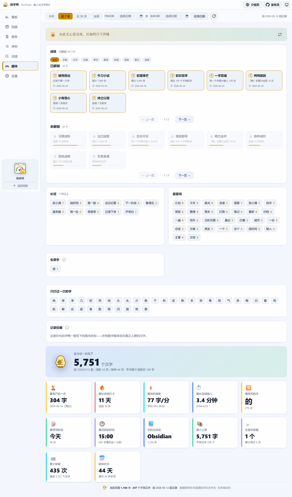
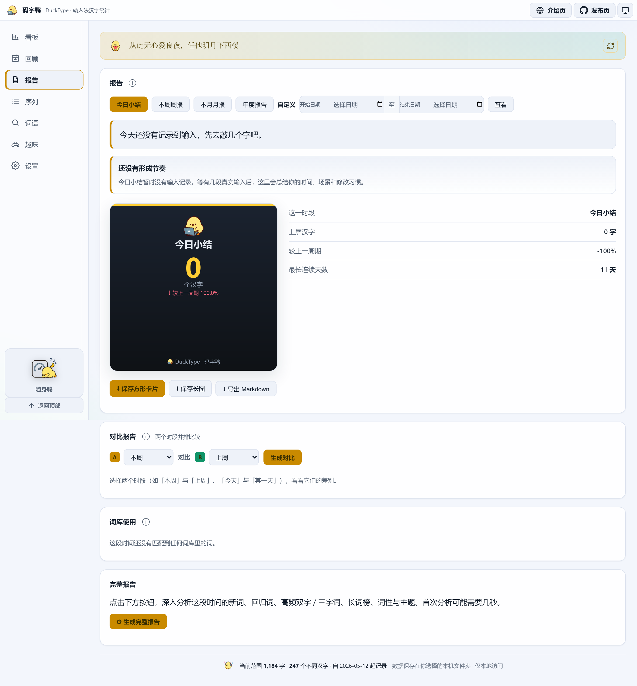
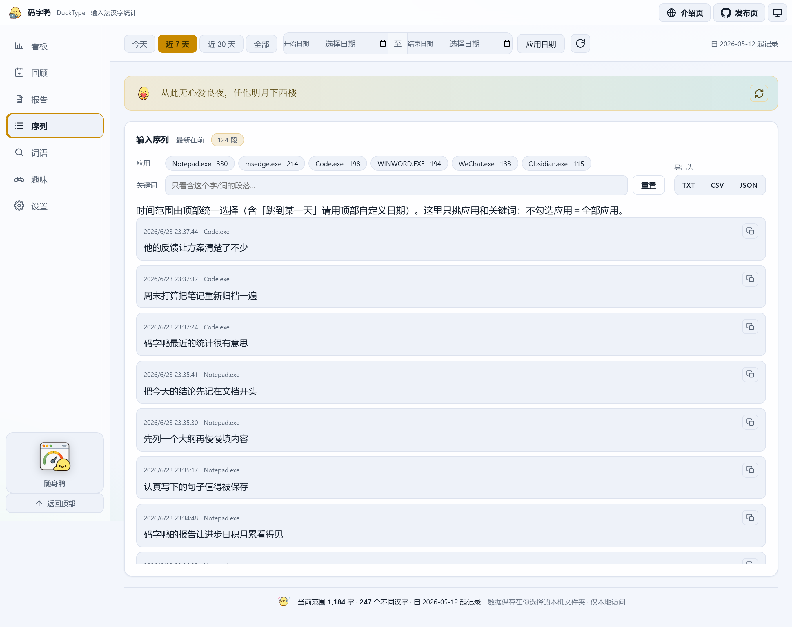
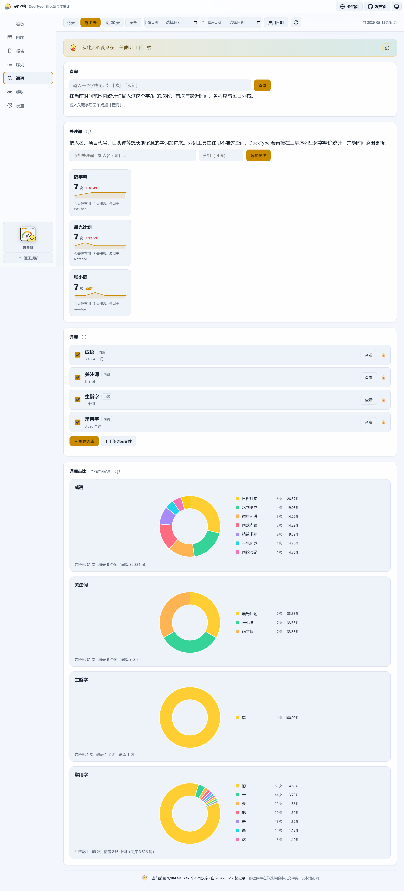

{kind=link}
{kind=link}
{kind=link}
{kind=link}
Committed-character counting
It watches the characters your IME actually commits, not keyboard presses. Your Chinese “word count” finally approaches what you really wrote.
Local Chinese-input analytics for Windows
It sits quietly in your tray and counts only the Chinese characters your IME actually commits. Pinyin, English and digits are never stored, your data stays on your machine, and scattered keystrokes turn into rhythm, vocabulary, reports and replay.
A real dashboard
Headline metrics, daily trends, active hours, per-app breakdowns, top characters and words, parts of speech, a contribution heatmap and full reports all live in one local window. Since 0.3.0 there is also a vocabulary-growth curve, per-app typing speed and a weekday-vs-weekend rhythm; below-the-fold panels load as you scroll, so the first paint is faster. Load the demo data to preview, or let it record quietly from today.
 Click to enlarge
Click to enlarge
A tour
Beyond the dashboard there are achievements, reports, the input sequence and lexicons. All screenshots use demo data to show how DuckType organizes your input.

Click to enlarge
Click to enlarge
Click to enlarge
Click to enlargeFeatures
It watches the characters your IME actually commits, not keyboard presses. Your Chinese “word count” finally approaches what you really wrote.
No pinyin, English, digits or ordinary shortcuts are stored. Password fields are skipped; app blacklist, pause and a retention window are all yours to set.
Daily, weekly, monthly and yearly reports translate the numbers into prose, and export as a share card or a long image with trends, insights and word frequencies.
Names, codenames, catchphrases and custom lexicons are counted exactly — perfect for watching long-term themes and habits the segmenter would miss.
Replay your real committed fragments on a timeline, filter by app and keyword, and export to TXT, CSV or JSON for further analysis.
A floating, always-on-top counter shows your typing speed on a gauge, with a speed sparkline, session count, daily goal and a clock — no need to open the full dashboard while writing.
Every distinct word and character you have ever written, accumulated by the day it first appeared — an ever-rising curve that shows your vocabulary getting bigger.
A per-app typing-speed ranking plus a weekday-vs-weekend average — see where you write fastest and whether your output leans toward weekdays or weekends.
Why it’s different
Chinese input turns a string of pinyin into a word — how many keys you pressed has almost nothing to do with how much you wrote. Ordinary trackers count the former; DuckType counts only the latter.
Typing pinyin, paging, picking candidates — every action counts as “input”, inflating the number so it tells you nothing about real output.
Counted only the moment the IME commits a character. Pinyin, paging, English and digits don’t count — this is what you actually wrote.
Local-first
DuckType’s core data is each committed character, its timestamp and the app at the time. Everything stays in a data folder you choose; backup, migration and deletion are all under your control.
.duckpack backup.Who it’s for
See real progress through papers, notes, proposals and revisions.
Use weekly reports and word frequencies to review themes and output.
Turn daily goals, streaks and project vocabulary into long-term feedback.
Know which apps you write most in, and when you’re in flow.

Floating window
The full dashboard is for review; the mini duck is for the moment you’re writing. A gauge needle shows your typing speed, alongside a one-minute speed sparkline, this session, today’s count, goal progress and a live clock. Toggle it with a global hotkey; closing it returns to the main dashboard.
See quick startOpen & ahead
DuckType stays open source and local-first. What’s next is making review smoother and retrospectives warmer — finer dimensions, better exports, kinder onboarding.
Day review, collected records, daily/weekly/monthly goals and Markdown weekly reports (shipped in v0.2.9).
Vocabulary growth, per-app efficiency, weekday/weekend rhythm and lazy-loaded board panels (shipped in v0.3.0).
Project dimensions, more retrospective views and optional local encrypted backups.
FAQ
No. DuckType never connects to the network and never uploads any input. It only records, on your machine, “each committed character + time + the app at the time.” All data lives in a folder you choose; deletion, backup and migration are up to you.
Pinyin, English and digits are never stored; large pastes are ignored; common password managers are blacklisted by default and password fields are skipped. You can blacklist more apps or pause anytime.
Windows only for now. It hooks into the system Text Services Framework (TSF) to capture committed characters, so mainstream pinyin / wubi IMEs work; classic edit controls have a fallback path too.
The build is currently unsigned, so Windows SmartScreen may show “Windows protected your PC / unknown publisher.” That doesn’t mean it’s malware — it just hasn’t bought a code-signing certificate or built download reputation yet. To run it: click “More info → Run anyway.” To verify integrity, compare the SHA-256 shipped with each release (Get-FileHash .\DuckType.exe -Algorithm SHA256) and only download from the official Releases page. You can also build from source.
Yes. Under Settings → Data, export the whole database as a single .duckpack file and import it on the new machine; stats, lexicons and goals all migrate together.
Data lives in the local folder you chose; uninstalling won’t touch it, and you can delete it by hand once you’re sure. The software itself is completely free and open source (MIT).
Once it has a few real input sessions, you’ll see for the first time how much you’ve written lately, when you’re in flow, and which apps your characters land in.